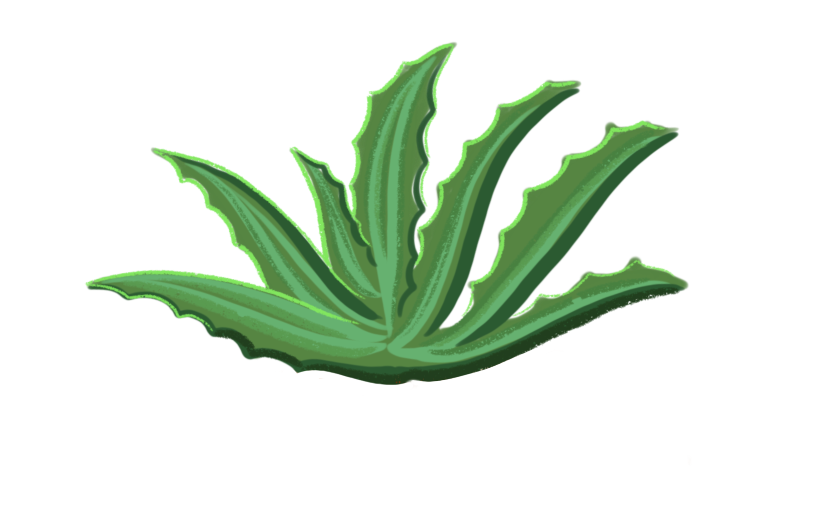
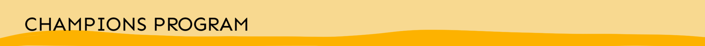
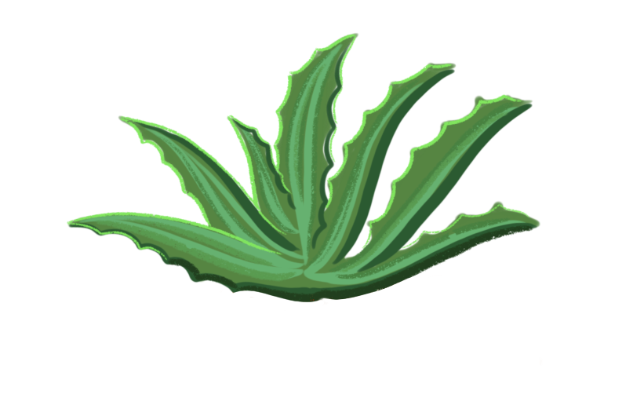

Openscapes Champions is an open data science mentorship program for science teams.


Openscapes Champions is an open data science mentorship program for science teams.
We support researchers to reimagine data analysis & stewardship as a collaborative effort, develop modern skills that are of immediate value to them, and cultivate collaborative and inclusive research communities. We work with academic, government, and non-profit research teams who become part of the open science movement as Champions empowered with new skill-sets and mindsets for modern data-intensive science. Learn these Champions’ stories through our blog, media, as well as steps for you to supercharge your research.
Openscapes Champions Lesson Series
The Openscapes Champions Lesson Series is our open source curriculum we use to teach Champions Cohorts, and you can use it too.

For Openscapes at a glace, check out our overview slides.
Openscapes Champions is a multi-month program that is led remotely and designed to ignite incremental and sustainable change within research groups — and beyond. The program remotely convenes a cohort of science teams twice per month over two or four months for 1.5-hour video calls that we call Cohort Calls. This is not a workshop. The Champions program design is modeled after Mozilla Open Leaders, where small time requirements over longer time frames and participants focused on their existing work fosters incremental change, accountability, and community building within the realities of scientists’ busy schedules, varying expertise and needs.
Each Cohort Call uses the Champions Lesson Series, which is an open curriculum originally based on what was instrumental in the Ocean Health Index (OHI) team’s path to better science in less time, and openly iterated as we experiment and learn. We start off each call with a reminder of our Code of Conduct and provide multiple channels for participation, including through silent contributions to the Google Doc Agenda, breakout groups, and full-group discussions. Each call closes with an efficiency tip and an inclusion tip to incorporate into daily practice.
Participants attend as teams, and come prepared for engaged participation as a whole cohort and within smaller breakout groups (as teams and mixed across teams). Discussions focus around collaborative mindsets, norms, and software to enable open, reproducible, inclusive research, introducing tools like R, tidyverse, RMarkdown, GitHub, Google Drive, and Twitter and practices from open source communities, inclusive design, psychological safely, facilitation techniques, and examples from specific research domains including the OHI and previous Champions. Teams intentionally have a mix of data/coding experience and responsibilities; there are no coding prerequisites to participate.
Openscapes Champions program is designed so that everyone can learn new approaches and make progress, no matter where they are starting from. Each team creates a Pathway document to start thinking about where they are now in terms of the tools and practices for reproducibility, collaboration, communication, and culture. Throughout the Cohort, teams develop their Pathway to help identify, prioritize and articulate their needs and next steps. Pathway progress from each team is presented in the final session, which helps participants practice articulating their data workflow plans and needs, and see similarities and allies across the cohort to continue on these paths together.
With Cohort Calls occurring twice monthly on alternating weeks, the time in between each session enables participants to reflect and practice new concepts of immediate value to their own work while the Openscapes team incorporates feedback and iterates to better support cohort needs. One way we suggest reinforcing this reflection and practice is through a regular practice of separate team data-workflow meetings (we call “Seaside Chats”) in the alternating weeks between cohort calls. This gives them an opportunity to share their learning with their broader team or collaborators, to work on their Pathways with their teams and identify, discuss norms around data and code management and inclusive onboarding practices, and identify things they want to learn together and things they can teach each other.
The remote- and cohort-nature of the program is designed to reinforce each other’s learnings and networks across participating teams, with the purpose of empowering folks with open data science, and strengthening mindsets and habits to make data workflows and team culture more efficient and resilient.

Explore previous Openscapes Champions Cohorts to learn about these inspiring teams’ research and open data science momentum.
“This program has honestly completely re-made how I think about my science. Openscapes is a supportive training course for moving your lab toward open science, that meets you where you are.” — Dr. Chelsea Wood, University of Washington
“Openscapes has created a new way of thinking about merging empathy and science. That’s an invaluable gift to me.” — Dr. Halley Froehlich, University of California Santa
“My group needs to collaborate better and [Openscapes] provided good exposure to tools and mindsets that facilitate open science.” — Lead at NOAA Northeast Fisheries Science Center (NEFSC)

The Openscapes Champions Lessons Series is the core curriculum that we use in the Champions Program. It is iterated openly, with the most recent version always available online. Each Chapter has associated slides used in Cohort Calls, which we cover in Cohort Calls.
The Lesson Series is originally framed around the the tools and practices critical to the OHI team’s path to better science in less time, with examples from the open source programming language R and R communities. However, the concepts are relevant no matter the programming language, and we continually invest in this curriculum to incorporate examples from other languages and communities as well.

Our Resources page has some resources meant to welcome environmental scientists who are newly onboarding to open data science. We also have a public Openscapes Zotero library linking publications, talks, and curricula. Our Openscapes GitHub Organization has pinned repositories of interest, including the teaching-learning-resources repo where we use Issues to jot down specific tools or learning resources for open, reproducible, inclusive science.

Learn more about how research groups participate in our Frequently Asked Questions.